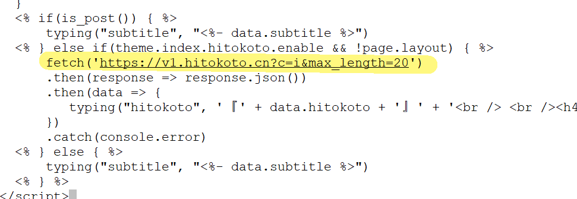

【置顶】Hexo更新日志
本文最后更新于：6 months ago
一、添加emoji显示功能
npm un hexo-renderer-marked --save
npm i hexo-renderer-markdown-it --save
npm install markdown-it-emoji --save一般需要卸载原来的插件，但是我发现我的文件夹里并没有hexo-renderer-marked也就没有删了。
在_config.yml中添加以下代码：
markdown:
render:
html: true
xhtmlOut: false
breaks: true
linkify: false
typographer: true
quotes: '“”‘’'
plugins:
- markdown-it-abbr
- markdown-it-footnote
- markdown-it-ins
- markdown-it-sub
- markdown-it-sup
- markdown-it-emoji # add emoji
# anchors:
# level: 2
# collisionSuffix: 'v'
# permalink: false
# permalinkClass: header-anchor
# permalinkSymbol: ¶由于那个链接的东西实在是太丑了，我就注释掉了😣
使用:persevere:这样的语法就可以显示上面那个表情啦。具体可以参考https://www.cnblogs.com/zhaoruiqing/articles/12870209.html
二、添加live2D
npm install --save hexo-helper-live2d在_config.yml中添加以下代码：
live2d:
enable: true # 是否启动
scriptFrom: local # 默认
pluginRootPath: live2dw/ # 插件在站点上的根目录(相对路径)
pluginJsPath: lib/ # 脚本文件相对与插件根目录路径
pluginModelPath: assets/ # 模型文件相对与插件根目录路径
tagMode: false # 标签模式, 是否仅替换 live2d tag标签而非插入到所有页面中
debug: false # 调试, 是否在控制台输出日志
model:
use: live2d-widget-model-tororo ## 模型文件
display:
position: right # 定位方向 left right top bottom
width: 150 # 小人宽度
height: 300 # 小人高度
hOffset: 5 # 向 偏移
vOffset: -60 # 像 偏移
mobile:
show: false # 手机端是否显示
react:
opacity: 1.0 # 模型透明度再使用cmd命令下载模型
npm install live2d-widget-model-tororo其他模型可以参考该仓库：https://github.com/xiazeyu/live2d-widget-models
在根目录里新建一个文件夹live2d_models，然后把模型放进去即可
三、添加音乐播放器（具有收入侧栏的功能）
事实上，我选用的主题fluid自带有aplayer音乐播放器
aplayer: # 音乐播放器，注意不能与 hexo-tag-aplayer 插件共用
enable: true
autoplay: false # 音频自动播放
loop: 'all' # 音频循环播放, 可选值: 'all', 'one', 'none'
order: 'random' # 播放顺序，可选值: 'list', 'random'
theme: '#b7daff' # 主题色
songs: # 歌曲列表，必须传入下列各参数，其中 url 与 cover 在本地需存于 source 目录，更多参数见文档：https://aplayer.js.org/#/zh-Hans/?id=%E5%8F%82%E6%95%B0
- { name: 'Flaming', artist: '郑晟河', url: '/Wuhlan3/mp3/song1.mp3', cover: '/Wuhlan3/img/song1.jpg' }
- { name: '流れ行く雲', artist: '岸部真明', url: '/Wuhlan3/mp3/song2.m4a', cover: '/Wuhlan3/img/song2.jpg' }
- { name: '奇迹の山', artist: '岸部真明', url: '/Wuhlan3/mp3/song3.m4a', cover: '/Wuhlan3/img/song2.jpg' }
- { name: 'Sunflower', artist: '孙培博', url: '/Wuhlan3/mp3/song5.mp3', cover: '/Wuhlan3/img/song3.jpg' }
- { name: '少年の梦', artist: '岸部真明', url: '/Wuhlan3/mp3/song4.m4a', cover: '/Wuhlan3/img/song2.jpg' }
- { name: 'like a star', artist: 'Youngso Kim', url: '/Wuhlan3/mp3/like a star.mp3', cover: '/Wuhlan3/img/like a star.jpg' }
- { name: '境', artist: '刘嘉卓', url: '/Wuhlan3/mp3/境.mp3', cover: '/Wuhlan3/img/刘嘉卓.jpg' }
- { name: '翼~you are the HERO~', artist: '押尾コータロー', url: '/Wuhlan3/mp3/wings.mp3', cover: '/Wuhlan3/img/押尾.jpg' }只需要稍微修改一下参数就🆗啦，当然，我们会发现，播放器小框框一直显示在左下角，很碍眼。
通过该路径：\blog\themes\hexo-theme-fluid\source\css，新建一个文件custom.css，在里面放下这段代码即可。
.aplayer.aplayer-fixed.aplayer-narrow .aplayer-body {
left: -66px !important;
/* 默认情况下缩进左侧66px，只留一点箭头部分 */
}
.aplayer.aplayer-fixed.aplayer-narrow .aplayer-body:hover {
left: 0 !important;
/* 鼠标悬停时左侧缩进归零，完全显示按钮 */
}四、添加动态效果
添加动态效果的方法非常简单，在_config.yml中找到该代码块：
custom_js: # 指定自定义 js 文件路径，路径是相对 source 目录，如 /js/custom.js 对应存放目录 source/js/custom.js，支持列表
- /js/dongtaicaidai.js # 动态彩带
# - /js/bubble.js #头部上升气泡
#- //cdn.jsdelivr.net/gh/bynotes/texiao/source/js/xiaoxuehua.js
#- //cdn.jsdelivr.net/gh/bynotes/texiao/source/js/daxuehua.js可以直接按照格式调用JS代码，也可以通过本地的路径来调用JS代码
分享一个小仓库：https://cdn.jsdelivr.net/gh/bynotes/texiao@latest/source/js/
五、添加一言
详情参考https://hexo.fluid-dev.com/posts/fluid-hitokoto/
值得注意的是，如何进行句子的筛选呢。
句子类型（参数）
| 参数 | 说明 |
|---|---|
| a | 动画 |
| b | 漫画 |
| c | 游戏 |
| d | 文学 |
| e | 原创 |
| f | 来自网络 |
| g | 其他 |
| h | 影视 |
| i | 诗词 |
| j | 网易云 |
| k | 哲学 |
| l | 抖机灵 |
| 其他 | 作为 动画 类型处理 |
可选择多个分类，例如：
?c=a&c=c

在引用一言官网链接的时候，在网址后面添加相关参数即可
六、对文章进行加密
加入这个功能，会不会违背写博客这个初心呢？
//安装插件
yarn add hexo-blog-encrypt修改配置文件
#文章加密
encrypt:
enable: true在文章开头加入一些信息
password: XXXXXX
message: 嘻嘻，有密码才能看喔
excerpt: 旧的文章概要
abstract: 新的文章概要七、将博客搭载到云服务器上
八、购买域名
九、HTTP升级为HTTPS
文章加密在gitee上可以正常运行，但是搭载到服务器上就报错了。

参考问题：https://github.com/D0n9X1n/hexo-blog-encrypt/issues/114
应该是浏览器认为该操作不安全，所以需要将HTTP升级为HTTPS
本博客所有文章除特别声明外，均采用 CC BY-SA 4.0 协议 ，转载请注明出处！